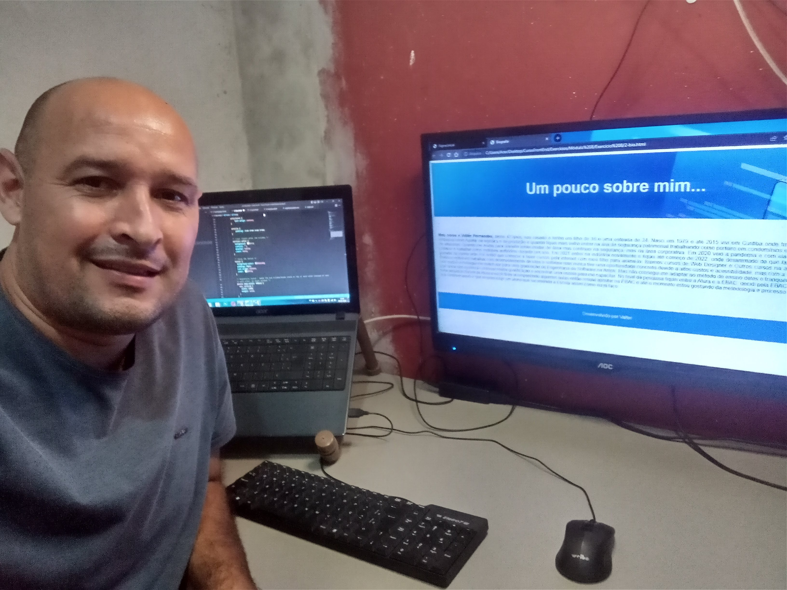

Meu nome é Valter Fernandes, tenho 42 anos, sou casado e tenho um filho de 16 e uma enteada de 24. Nasci em 1979 e até 2015 vivi em Curitiba onde trabalhei em algumas empresas como Auxiliar de logística e de produção e quando fiquei mais velho entrei na ária de segurança patrimonial trabalhando como porteiro em condomínios e depois em portaria de empresas. Quando me mudei para Joinville tentei mudar de área mas continuei na segurança, mas na área corporativa. Em 2020 veio a pandemia e com ela perdi o emprego e comecei a trabalhar como motoboy autônomo durante um ano. Em 2021 entrei na indústria novamente e fiquei até começo de 2022, onde desanimado do que fazia resolvi dar uma guinada na minha vida. Foi então que comecei a fazer cursos pela internet com meu filho para anima-lo, fizemos cursos de Web Designer e Outros cursos na área da informática. Sempre sonhei em trabalhar com desenvolvimento de sites e software mas nunca tive uma oportunidade concreto devido a altos custos e acessibilidade, mas com a vinda da pandemia isso mudou e consegui me matricular para uma graduação de Engenharia de Software na Ampli. Mas não consegui me adaptar ao método de ensino deles e tranquei o curso. Foi então que nesse ano eu decidi continuar minha qualificação e encontrar uma escola para me capacitar. No final da pesquisa fiquei entre a Alura e a EBAC, decidi pela EBAC pois minha filha já tinha adquirido cursos da Alura e eu já tinha acompanhado algumas aulas então resolvi apostar na EBAC e até o momento estou gostando da metodologia e processo de ensino. Espero que continue assim e que eu possa ser um aluno que recomende a Escola assim como eu já faço.
